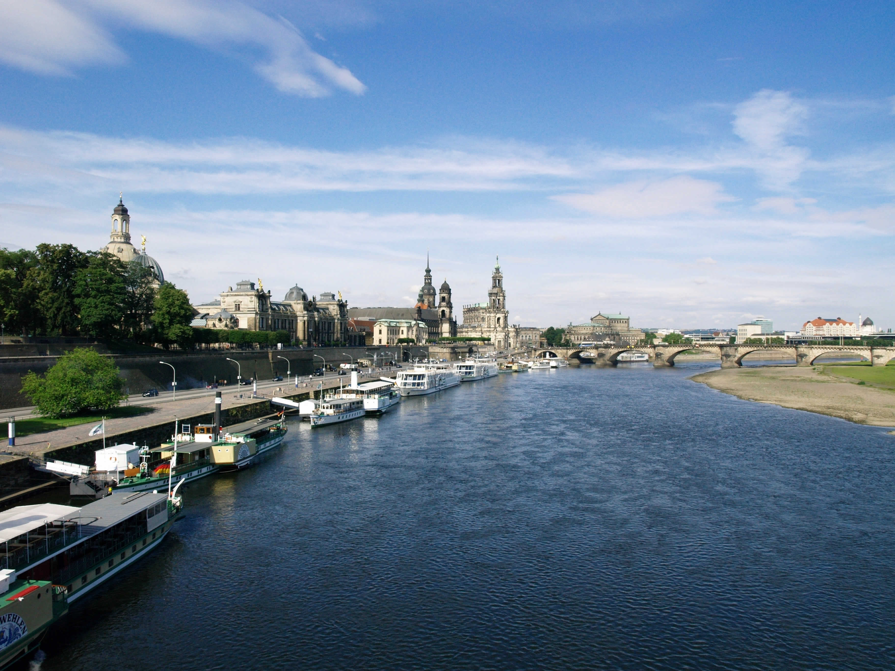

In the City Region
There are plenty of things to see in Dresden’s downtown area. But a few excursions beyond the Neumarkt and Altmarkt quarters are worth taking even if your time is limited. One of the most distinctive buildings in the city is the Yenidze. Built at the beginning of the last century as a tobacco comptoir, the impressive building under the colored glass dome now also houses a restaurant. Distant worlds are also accessible only a few minutes to the east of the city center. The Dresden Zoo is located within the Great Gardens, with more than 2,000 animals of more than 300 species. A visit to the zoo can be followed by a trip on the park’s miniature railway. At the edge of the gardens is the "Transparent Factory", constructed from 2002 to 2006. Here, visitors can see – through a sheet of glass – how a car is manufactured. It’s an unusual transparent manufacturing plant that is not just interesting to automotive specialists. History and the present exist side by side in the Hellerau neighborhood. The cornerstone of Germany’s first garden city was laid only five years after the one in Letchworth, near London. With the headquarters of the German Workshops and the large Festival Hall, Hellerau combines handicrafts and culture in a memorable way. The impressive Elbe landscape is known for the Elbe Palaces. When traveling to see them, it’s worth driving across the "Blue Wonder". Dresden’s funicular railway stations are also nearby. In the summer, the Saxon steamboat tours invite visitors to explore the area by water. The nostalgic fleet travels through one of Europe’s most beautiful riverscapes. Trips also often pass by Pillnitz Palace. The former summer residence of the Saxon royal family is the largest chinoise-style palace in Europe.  The palace gardens, with more than 2,000 trees and over 600 potted plants, are an inviting place for an engaging stroll any time of year.